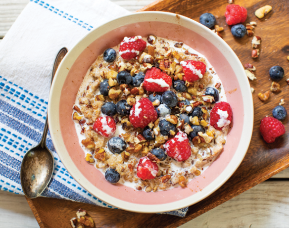

Fruit Cereal

A bowl of fruit cereal
Ingredients
- nuts
- chia seeds
- granola
- bananas
- blueberries
- blackberries
- cereal
Procedure
- Start by washing and chopping your fruit. I love to chop my fruit into different shapes to provide extra texture.
For example I may slice half of my banana and chop the other half into smaller pieces.
- Once you've prepared all your fruit, place the fruit into a bowl and top it with whatever nuts, seeds,
oats, and or dried fruit you desire.
- Pour some chilly, non-dairy milk overtop and enjoy!
Fruit cereal recipe